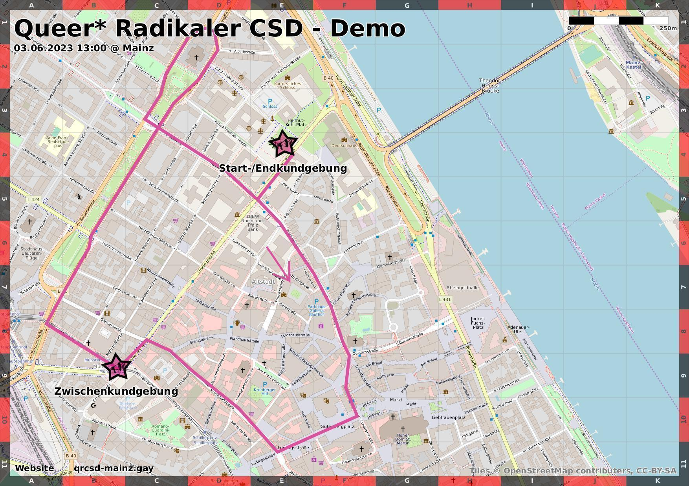

Demonstration
Am 3. Juni wollen wir gemeinsam auf die Straße gehen um die Perspektiven queerer Menschen sichtbar zu machen. Heutzutage gehen die Rechte queerer Personen in vielen Ländern zurück, und auch in Deutschland droht der schäbige Entwurf des Selbstbestimmungsgesetzes das Recht von trans* und inter* Personen auf Selbstbestimmung einzuschränken. In diesem Kontext geben wir uns mit dem leider etablierten pink gewaschenen Regenbogenumzug nicht zufrieden. Laut und kämpferisch wollen wir den politischen Charakter des CSDs zurückfordern und für unsere Rechte einstehen.
Der radikale CSD ist queerfeministisch, antirassistisch, antiableistisch, antiklassistisch, antifaschistisch und antikapitalistisch. Wir wollen einen Raum schaffen, an dem Queers laut sein können, die besonders unsichbar gemacht werden. In diesem Sinne reflektieren wir unsere Privilegien und reihen uns hinter BIPoCs, Sexarbeitende, behinderte Menschen, trans* und inter* Personen sowie andere marginalisierte Gruppen.
Wir positionieren uns gegen die Akzeptanz der Teilnahme der Polizei am CSD, first pride was a riot, und so soll es bleiben. Die Polizei stellt für viele marginalisierte Personen bis heute eine Bedrohung dar und ihre Präsenz kann für Betroffene von Polizeigewalt besonders triggernd sein. Daher schließt die Kooperation mit der Polizei grundsätzlich queere Menschen aus, die innerhalb der Community schon oft unsichtbar gemacht werden. Wir fordern die Selbstbestimmung Betroffener statt der Einmischung und Bevormundung durch den Staat.
Die Demo ist angemeldet und startet um 13:00 am Ernst-Ludwig-Platz. Vor Ort werden Awareness-Personen ansprechbar sein. Außerdem wird ein Abreisesystem in Richtung Hauptbahnhof und Haus Mainusch organisiert, damit Menschen auf dem Rückweg der Demo nicht alleine gelassen werden.
Gesundheitsschutz und Zugänglichkeit/Barrierefreiheit
Wir bitten die Teilnehmenden um eine solidarische Haltung gegenüber Risikogruppen. Bitte teste dich vor der Demo auf Covid-19 und trage während der Demo eine FFP2-Maske zu tragen. Verzichte bitte auf die Teilnahme an der Demo, wenn du Erkältungssymptome hast oder in den Tagen vor der Veranstaltung in Kontakt mit einer coronapositiven Person warst.
Die Route schätzen wir als rollstuhlgerecht ein, dies ist allerdings die Einschätzung von Menschen, die keinen Rollstuhl brauchen. Wir empfehlen Menschen, für die diese Information relevant ist, es nochmal selber einzuschätzen.
Aktuell gibt es leider noch keine*n Gebärdendollmetscher*in für die Reden auf der Demo, falls sich das noch ändert teilen wir dies in den Kommentaren zu diesem Beitrag noch mit. Falls ihr euch vorstellen könnt das zu machen, meldet euch gerne per Mail an die gleich erwähnte Adresse.
Wir gehen gerne auf weitere Fragen zu Barrieren ein, schreib uns an:
demo-qrcsd-mainz@systemli.org
Wir möchten darauf hinweisen, dass wir nur unsere Einschätzungen als von vielen Einschränkungen nicht-Betroffene geben können.
Hier noch der geplante Ablauf der Demo, wir versuchen uns so gut wie möglich an die Zeiten zu halten aber können die leider nicht komplett verlässlich festlegen.
• 13:00 Uhr
Kundgebung am Ernst-Ludwig-Platz
• ca. 13:45 Uhr
Start der Laufdemo
• ca. 14:15 Uhr
Zwischenkundgebung am Münsterplatz
• ca. 15:00 Uhr
Ende am Ernst-Ludwig-Platz
• bis ca. 16:00 Uhr
Abschluss mit Live Musik von ph4nt
Rede
Wir suchen noch Personen, die im Rahmen der Demo eine Rede halten möchten. Diese kann als MP3-Datei aufgenommen und abgespielt werden. Wenn du auf der Demo eine Rede halten oder der Orga eine Aufnahme zukommen lassen möchtest, wende dich gerne an:
rede-qrcsd-mainz@systemli.org
Schreib in der Mail bitte worum es in deiner Rede gehen soll. Wir freuen uns besonders über Beiträge von BIPoCs und anderen Menschen, deren Stimmen zu oft nicht gehört werden.
{kind=link}